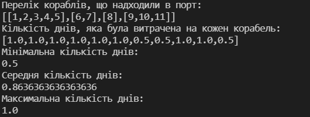

Лабораторна робота 4.
Програмування списків мовами функціонального програмування.
Варіант 20
Автор
| ПІБ: | Семечненко Тарас Олександрович |
| Курс: | 4 |
| Група: | ІПЗ-42 |
| Рік навчання: | 2021-2022 |
Зміст
Мета
Умова задачі
Структура програми
Обгрунтування вибору середовища та мови програмування
Код програми
Скрін-шоти
Аналіз достовірності результатів
Висновки
Мета
Опанувати теоретичні основи використання списків функціональними мовами та розробити програми обробки списків.
Умова задачі
Задача 1
Задача 2
Структура програми
Схема задачі 1

Схема задачі 2

Обгрунтування вибору середовища та мови програмування
Середовище програмування: VS Code
Середовище обране через:1) Це моє основне середовище в якому програмую, і його можна використовувати майже для будь-якої мови програмування.
2) Має всі необхідні функції для програмування і працює набагато швидше в порівнянні з іншими IDE.
Мова функціонального програмування: Haskell
Мова обрана через:1) Це одна з самих популярних та нових функціональних мов програмування.
2) Дуже багата документація.
3) Мова має дуже приємний та простий синтаксис.
Код програми:
Завдання 1:
Завдання 2:
Посилання на код 1 завдання
Посилання на код 2 завдання
Скрін-шоти:
Результат виконання 1 програми:
Результат виконання 2 програми:
Аналіз достовірності результатів
В першому завданні нам дано масив [1, 2, 10, -432, 6, 345, 0, -5, 24, 0]
а) перший від'ємний елемент в цьому списку -432 і між першим нульовим елементов стоять 2 числа: 6 та 345
перший додатній елемент 1 і між першим нульовим елементом знаходяться наступні числа: 2, 10, -432, 6, 345.
Отже результат 6, 345, 2, 10, -432, 6, 345.
б) якщо видалити всі нульові елементи, то результат буде: 1, 2, 10, -432, 6, 345, -5, 24
в) в даному списку є 4 числа, які є факторіалами: 1 = 1!, 2 = 2!, 6 = 3!, 24 = 4!, отже відповідь 1, 2, 6, 24
В другому завданні в нас є масив кораблів які надходять в порт, і виглядає він наступним чином: [[1, 2, 3, 4, 5], [6, 7], [8], [9, 10, 11]].
В даному масиві є підмасиви, які імітують надходження кораблів кожні 2 дні.
Першого дня прийшло 5 кораблів, де перший день розвантажувались кораблі 1 та 2 (і це зайняло по 1 дню),
На 2 другий день розвантажувалися 3 та 4 корабель.
На 3 день прийшли ще 6 та 7 корабель, однак в нас ще не розвантажився 5 корабель. Тому на 3 день будуть розвантажуватися 5 та 6 по 1 дню.
На 4 день в нас залишиться 7 корабель, який буде розвантажуватися пів дня.
На 5 день надходить коребель 8, який буде розвантажуватися пів дня
На 6 день кораблів немає
На 7 день приходить ще 3 корабля, де на 7 день будуть розвантажуватися 9 та 10 по 1 дню, а на 8 день буде розвантажуватися 11 корабель пів дня.
Таким чином ми отримуємо масив в якому показано кількість днів на розвантаження кожного корабля в тому порядку в якому вони надходили.
Потім ми знаходимо максимальне, мінімальне та середнє значення розвантаження.
Висновки
В л.р. було виконано 2 завдання за допомогою мови Haskell.
В першому завданні були реалізовані різні маніпуляції зі списком даних. Необхідно було реалізувати власні функції, які могли б отримувати підмасив елементів, видаляти необхідні значення та фільтрувати ці масиви.
В другому завданні була реалізована симуляція розвантаження кораблів. Для того щоб відобразити надходження кораблів кожні 2 дні, я створив список списків, де кожен підсписок містить в назви кораблів, які надійшли певного дня. Завдяки чому можна було зручно описати симуляцію в якій розраховується кількість днів, які необхідно було витратити на розвантаження кожного корабля.